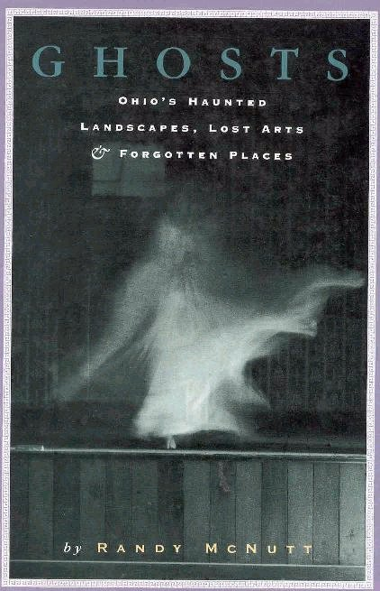

The following books are helpful if you're interested in researching the topics covered by the website; I got a lot of material directly from them. Most are great reads as well. If you know of anything that should be added to this list, please let me know.
New Burlington: The Life and Death of an American Village
By John Baskin
1977
A look at the ghost town of New Burlington in the years before it was flooded by the U.S. Army Corps of Engineers.
Amazon
Ghosts of the Ohio River
By Bruce Carlson
2005
Many little-known river hauntings in the area between Pittsburgh and Cincinnati.
Amazon
Ghosts of Marietta
By Connie Cartmell
1996
Hauntings in Ohio's oldest city.
Amazon
Uneasy Spirits: 13 Ghosts of Clermont County
By Rick Crawford
2002
Hauntings and horror stories from Clermont County, Ohio.
Amazon
Ohio Atlas and Gazetteer
By Delorme
1996
The absolutely indispensible atlas of Ohio's highways and backroads.
Amazon
Ghosts of Marietta
By Doug Dziama and Jennifer Dziama Teed
2013
 Hauntings along Ohio's Lake Erie shore.
Hauntings along Ohio's Lake Erie shore.
Amazon
Ghosts, Spirits, and Legends of Southeastern Ohio
By Lawrence Everett
2002
A collection of hauntings in southeastern Ohio.
Amazon
Ohio's Ghostly Greats
By David J. Gerrick
1982
Crudely-published but fascinating assemblage of Ohio ghost folklore.
Amazon
Forgotten Columbus
By Andrew Henderson
2002
 My first book--featuring many of Columbus's forgotten historic sites.
My first book--featuring many of Columbus's forgotten historic sites.
Amazon
. . . . . . .
Barnes & Noble
. . . . . . .
Review
Haunted Houses: Spooky Tales of Yellow Springs
By Harold Igo
2002
Ghost stories from the western Ohio college town of Yellow Springs.
Amazon
The Cletus P. Reese Story: Murder Ridge
By Jayne Call Imler
2002
A self-published, in-depth look at the largely forgotten serial killer from Coshocton County, Cletus Reese, and the farm which became known as Murder Ridge.
Amazon
Ghosthunting Ohio
By John B. Kachuba
Emmis Books, 2004
The author's second book, after Ghosthunting Illinois, examines a select handful of hauntings from each region of the state.
Amazon
Wisconsin Death Trip
By Michael Lesy
1973
 Often described as the only doctoral thesis with a cult following. This is the book that embodies everything fascinating and interesting about "dark" history.
Often described as the only doctoral thesis with a cult following. This is the book that embodies everything fascinating and interesting about "dark" history.
Amazon
Ghosts: Ohio's Haunted Landscapes, Lost Arts, and Forgotten Places
By Randy McNutt
Orange Frazer Press, 1991

An exploration of Ohio's many ghost towns.
Amazon
. . . . . . .
Review
Ohio Cemeteries
Ohio Genealogical Society
1976
A complete county-by-county listing of cemeteries throughout the Buckeye State. Indispensable, but hard to find.
Lost Ohio: More Travels in to Haunted Landscapes, Ghost Towns, and Forgotten Lives
By Randy McNutt
2006
McNutt's followup to the book that inspired me to start this website. An exciting prospect for any reader, much less one with interests like ours.
Amazon
Columbus Ghosts
By Robin Smith
2003
A great compendium of Columbus ghost tales.
Amazon
Columbus Ghosts 2
By Robin Smith
2003
Even more hauntings in Ohio's capital city.
Amazon
The Cincinnati Crime Book
By George Stimson
2003
 A great history of noteworthy crimes in Ohio's Queen City.
A great history of noteworthy crimes in Ohio's Queen City.
Amazon
Devils, Ghosts, and Witches: Occult Folklore of the Upper Ohio Valley
By George Swetnam
1988
Legends from Ohio, Pennsylvania, West Virginia, and Kentucky.
Amazon
Ghost Stories of Ohio
By Edrick Thay
Lone Pine Publications, 2002
The Ohio edition in a state-by-state ghost story series.
Amazon
Weird Ohio
By James Willis, Andrew Henderson, and Loren Coleman
2005
 My second book, co-authored with James Willis from Ghosts of Ohio and researcher Loren Coleman. Part of the Weird US series by Weird NJ creators Mark Sceurman and Mark Moran.
My second book, co-authored with James Willis from Ghosts of Ohio and researcher Loren Coleman. Part of the Weird US series by Weird NJ creators Mark Sceurman and Mark Moran.
Amazon
. . . . . . .
Barnes & Noble
. . . . . . .
Review
Haunted Ohio I-IV
and Ghost Hunter's Guide to Haunted Ohio
By Chris Woodyard
Kestrel Publications, 1991-2001
 Ohio's original true ghost story series.
Ohio's original true ghost story series.
Amazon
. . . . . . .
Review
Ohio: Off the Beaten Path
By George and Carol Zimmermann
2000
Trips through Ohio to some lesser-known historic sites.
Amazon
Back